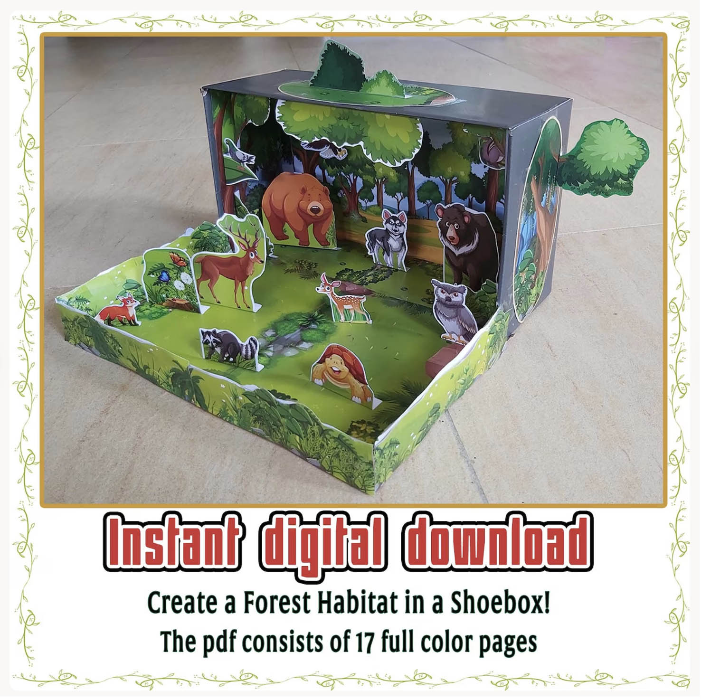
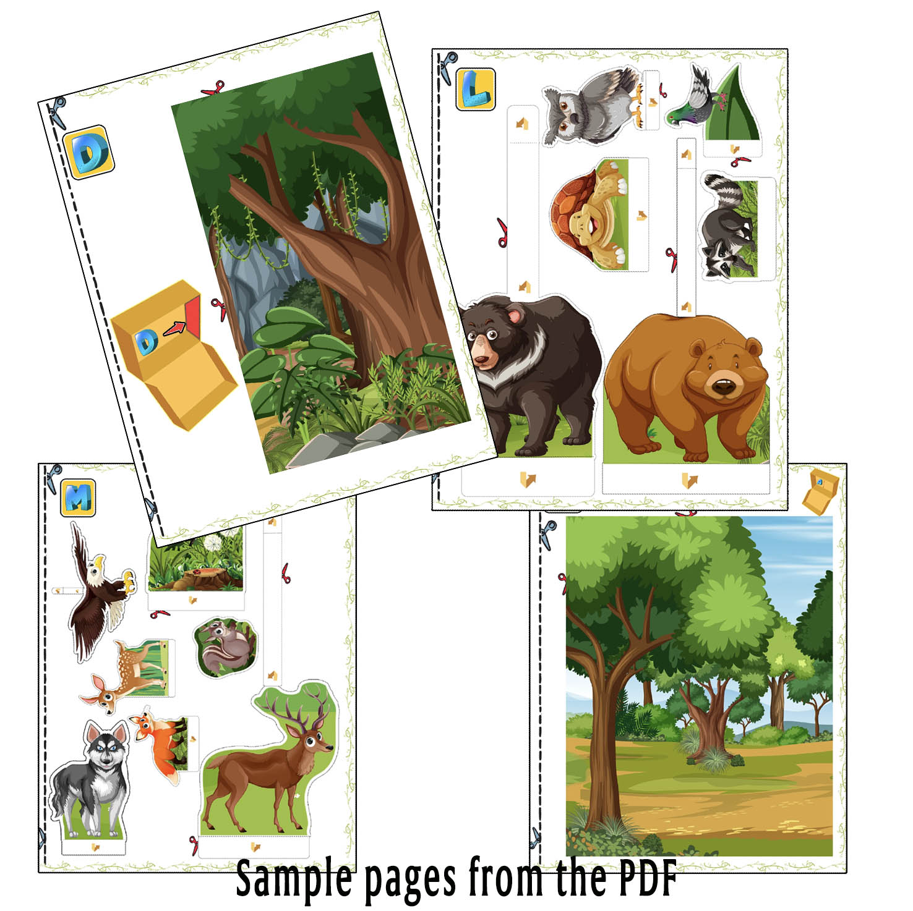

Maqueta de bosque 3D para niños
Convierte una caja de zapatos en un pequeño bosque lleno de animales, árboles y vegetación. Este proyecto incluye 17 páginas a color para imprimir, recortar y construir paso a paso.
Una actividad creativa para proyectos escolares sobre el bosque, los hábitats, los animales y los ecosistemas.
Ver proyecto
Una maqueta de bosque lista para construir
Imprime las piezas y crea un escenario con profundidad dentro de una caja de zapatos. Los niños pueden recortar y colocar los animales mientras descubren cómo es un hábitat de bosque.



Aprende sobre el bosque mientras construyes
Una maqueta de bosque no solo sirve para crear un proyecto bonito. También ayuda a entender cómo conviven las plantas, los animales y el entorno dentro de un mismo ecosistema.
Árboles y plantas
Los árboles forman gran parte del hábitat del bosque. Proporcionan sombra, alimento y refugio, mientras que arbustos, hierbas y otras plantas cubren el suelo y crean distintos espacios para la vida.
Animales del bosque
En un bosque pueden vivir mamíferos, aves, insectos y muchos otros animales. Cada especie busca alimento, agua y lugares seguros donde descansar, esconderse o cuidar a sus crías.
Un ecosistema conectado
Plantas y animales dependen unos de otros. Las plantas ofrecen alimento y refugio, mientras que los animales ayudan a dispersar semillas y forman parte de las cadenas alimentarias del bosque.
¿Qué incluye?
- 17 páginas a color.
- Fondos de bosque para la caja.
- Animales y elementos de naturaleza para recortar.
- Piezas que pueden colocarse en diferentes posiciones para crear profundidad.
- Archivo digital PDF para imprimir en casa.
Ideal para
- Proyectos escolares sobre ecosistemas y hábitats.
- Actividades sobre animales del bosque.
- Manualidades de papel para niños.
- Aprender creando en casa o en clase.
- Familias que buscan una base sencilla para empezar un proyecto escolar.
¿Cómo se construye?
Solo necesitas una impresora, papel, tijeras, pegamento y una caja de zapatos o una caja de cartón similar.
Mira cómo queda la maqueta
Un vistazo rápido al proyecto de bosque y al efecto 3D que puedes conseguir dentro de una caja de zapatos.
¿Quieres construir tu propia maqueta de bosque?
El proyecto es una descarga digital en PDF. Después de la compra podrás imprimir las páginas y empezar a construir.
€3,49 · Pago único · Descarga digital
Ver todas las maquetas